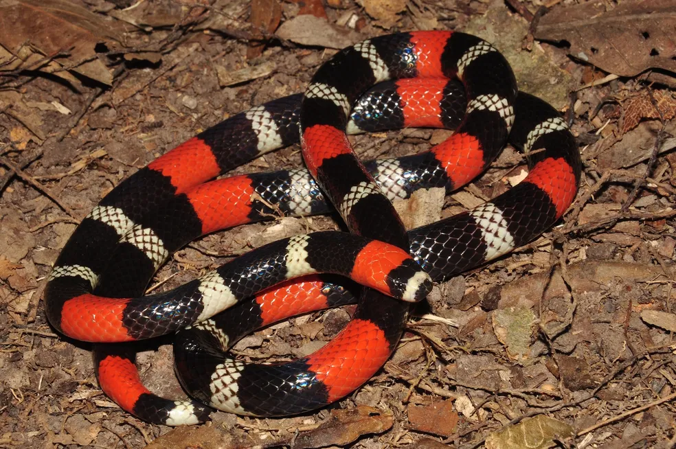

Micrurus sp.Identificação
A coral verdadeira apresenta anéis coloridos bem definidos ao longo de todo o corpo, cabeça pequena pouco destacada do pescoço e olhos pequenos, geralmente totalmente pretos.
Peçonhenta?
Sim, é uma serpente peçonhenta de elevada importância médica. Sua peçonha pode causar efeitos neurológicos graves, sendo necessário atendimento imediato em caso de acidente.
Importância ecológica
Atua no controle populacional de pequenos vertebrados e outros organismos, contribuindo para o equilíbrio ecológico.
Apesar de sua importância médica, a coral verdadeira é essencial para o ambiente e não deve ser morta.